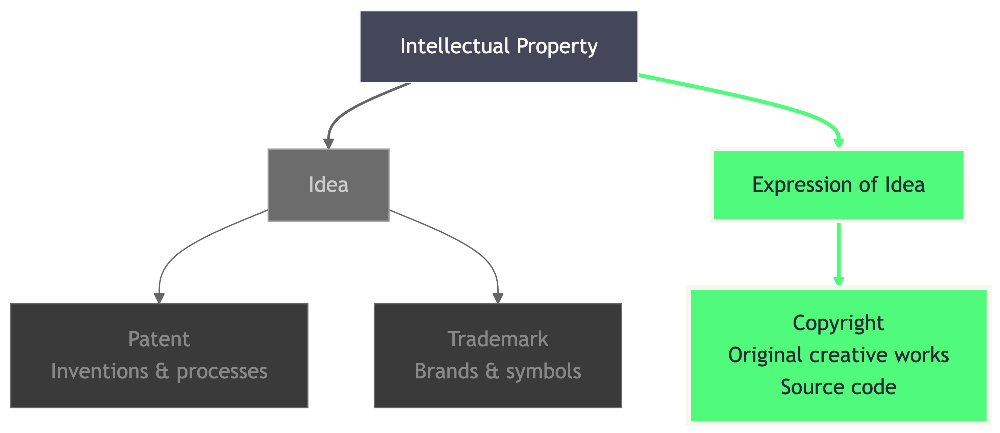

FOSS for Enterprise
Understanding Open Source Licenses, Risks, and Compliance
Indrajeet Patil

(xkcd, CC BY-NC 2.5)
Source code for these slides can be found on GitHub
In the beginning…
Software was free
- 1950s-1970s: Software bundled with hardware
- Source code shared freely among researchers
- Collaboration was the norm

Then came commercialization
- Late 1970s-1980s: Software became a product
- Companies realized revenue potential
- Proprietary licenses became standard
- Source code became trade secret

Effects on derivative work
Derivative work: Modifications, extensions, and (sometimes) linking to original software
GPL-2 (Reciprocal)

Derivative work restrictions:
- Modified code → Must be GPL-2
- Linked libraries → Must be GPL-2
- Combined works → Must be GPL-2
- Source code must be disclosed
MIT (Permissive)

Derivative work freedom:
- Modified code → Any license
- Linked libraries → Any license
- Combined works → Any license
- Source code disclosure optional
Case Studies: License Violations
Famous legal battles involving FOSS license infringement:

Germany • Dismissed
Linux developer sued VMware for GPL violation. VMware ultimately removed problematic component.
Takeaway: Dismissed cases can still force compliance

USA • Settled
U.S. court ruled GPL is enforceable contract. Landmark Ghostscript case.
Takeaway: GPL licenses are legally binding contracts

USA • Multiple Settlements
First U.S. GPL enforcement lawsuits vs. Verizon, Best Buy, Samsung, and others.
Takeaway: Big names aren’t immune to enforcement
Case Studies: Vulnerabilities
The cost of failing to patch FOSS vulnerabilities:

Unpatched Apache Struts
147.9M Americans + 15.2M British affected. Patch available 2 months before breach. Cost: $575M settlement.
Takeaway: Delaying patches costs hundreds of millions

CVSS 10/10 Critical
Apache Log4j vulnerability. CISA: “most serious in my career”. Hundreds of millions of devices vulnerable. Half of corporate networks probed.
Takeaway: Ubiquitous library = ubiquitous vulnerability

OpenSSL Memory Leak
17% of SSL servers affected (Yahoo, GitHub). Bug existed since 2011, disclosed 2014. Undermined Internet security foundations.
Takeaway: Encryption bugs expose everyone’s secrets
Case Studies: Sustainability Failures
Real-world examples of FOSS sustainability crises:

Package Removal
11 lines of code, 15M+ downloads. Maintainer removed after dispute, breaking thousands of projects (React, Babel, Node).
Takeaway: Tiny dependencies create massive failure points

Burnout & Underfunding
9B+ downloads, 50% of top 10k websites. Solo maintainer earns ~$400/month, threatened to go closed-source.
Takeaway: Critical infrastructure runs on volunteer labor

Maintainer Protest
3.3B+ downloads. Maintainer sabotaged libraries to protest Fortune 500s using free work without giving back.
Takeaway: Frustrated maintainers can become security risks
Open Source Tool: Trivy
Trivy - Comprehensive security scanner by Aqua Security
- Vulnerability detection
- License scanning
- Secret detection
- SBOM generation
Scan a container image:
trivy image nginx:latestFree, open-source, widely adopted in CI/CD pipelines